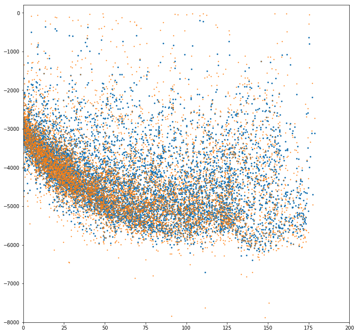

Age of the oceans / depth of the oceans¶
## This is a worked example for stripy if we don't use litho1.0 information
import litho1pt0 as litho1pt0
import stripy
import numpy as np
import gdal
import cartopy
import cartopy.crs as ccrs
%matplotlib inline
import matplotlib.pyplot as plt
even_mesh = stripy.spherical_meshes.icosahedral_mesh(include_face_points=True, tree=True, refinement_levels=2)
number_of_mesh_points = even_mesh.npoints
latitudes_in_radians = even_mesh.lats
latitudes_in_degrees = np.degrees(latitudes_in_radians)
longitudes_in_radians = even_mesh.lons
longitudes_in_degrees = np.degrees(longitudes_in_radians)%360.0 - 180.0
## Obtain bathymetry information from the ETOPO1 dataset and store in numpy image format
gtiff = gdal.Open("../../../Data/Resources/ETOPO1_Ice_c_geotiff.tif")
# width = gtiff.RasterXSize
# height = gtiff.RasterYSize
# gt = gtiff.GetGeoTransform()
img = gtiff.GetRasterBand(1).ReadAsArray().T
img = np.fliplr(img)
## Obtain the age data and store in img format
datasize = (1801, 3601, 3)
age_data = np.empty(datasize)
ages = np.load("Data/global_age_data.3.6.z.npz")["ageData"]
ages[np.isnan(ages)] = -1000.0
ages = (np.fliplr(ages.T))
## Map heights to the sample grid points
def map_raster_to_mesh(mesh, raster):
latitudes_in_radians = mesh.lats
longitudes_in_radians = mesh.lons
latitudes_in_degrees = np.degrees(latitudes_in_radians)
longitudes_in_degrees = np.degrees(longitudes_in_radians)%360.0 - 180.0
dlons = np.mod(longitudes_in_degrees+180.0, 360.0)
dlats = np.mod(latitudes_in_degrees+90, 180.0)
ilons = raster.shape[0] * dlons / 360.0
ilats = raster.shape[1] * dlats / 180.0
icoords = np.array((ilons, ilats))
from scipy import ndimage
mvals = ndimage.map_coordinates(raster, icoords , order=3, mode='nearest').astype(np.float)
return mvals
meshheights = map_raster_to_mesh(even_mesh, img)
meshages = map_raster_to_mesh(even_mesh, ages)
## Improve the grid to be dense in the oceans, sparse elsewhere, then remap the data
## If you refine the mesh to add new points / delete points on land etc, realise that you
## will need to re-map the data to the new mesh. Maybe add a function for the remapping
for i in range(0,3):
nodes_to_refine = np.where(meshheights < -1000)
allnodes = even_mesh.centroid_refine_triangulation_by_vertices(nodes_to_refine)
even_mesh = stripy.sTriangulation(allnodes[0], allnodes[1], tree=True)
meshheights = map_raster_to_mesh(even_mesh, img)
meshages = map_raster_to_mesh(even_mesh, ages)
latitudes_in_radians = even_mesh.lats
longitudes_in_radians = even_mesh.lons
latitudes_in_degrees = np.degrees(latitudes_in_radians)
longitudes_in_degrees = np.degrees(longitudes_in_radians)%360.0 - 180.0
## Now delete points on land etc
valid = (meshages>0) & (meshages<180) & (meshheights<0.0)
ocean_mesh = stripy.sTriangulation(even_mesh.lons[valid], even_mesh.lats[valid], tree=True)
meshheights = map_raster_to_mesh(ocean_mesh, img)
meshages = map_raster_to_mesh(ocean_mesh, ages)
latitudes_in_radians = ocean_mesh.lats
longitudes_in_radians = ocean_mesh.lons
latitudes_in_degrees = np.degrees(latitudes_in_radians)
longitudes_in_degrees = np.degrees(longitudes_in_radians)%360.0 - 180.0
## Smooth mesh heights
meshweights = (meshheights > 0.0) * 1.0 + 0.1
# Smoothing
smeshheights, sdx = ocean_mesh.smoothing(meshheights, meshweights, 1.0e8, 0.25, 0.0001)
# This is not as smooth
# smeshheights, sdx = ocean_mesh.smoothing(meshheights, meshweights, 1.0e7, 0.25, 0.0001)
# This is also not as smooth
# smeshheights, sdx = ocean_mesh.smoothing(meshheights, meshweights, 1.0e8, 0.75, 0.0001)
print("Raw bathymetry min / max: {}/{}".format(meshheights.min(), meshheights.max()))
print("Smoothed min / max: {}/{}".format(smeshheights.min(), smeshheights.max()))
Raw bathymetry min / max: -8148.0/-16.0
Smoothed min / max: -6708.70458984375/-199.8422393798828
## Is that sensible ?
## Check the age / bathymetry / smoothed bathymetry by eye
%matplotlib inline
import cartopy
import cartopy.crs as ccrs
import matplotlib.pyplot as plt
global_extent = [-180.0, 180.0, -89, 89]
projection0 = ccrs.PlateCarree()
projection1 = ccrs.Orthographic(central_longitude=140.0, central_latitude=0.0, globe=None)
projection2 = ccrs.Mollweide()
projection3 = ccrs.Robinson()
fig = plt.figure(figsize=(12, 12), facecolor="none")
ax = plt.subplot(111, projection=projection2)
ax.set_global()
colormap = plt.cm.get_cmap('RdYlBu_r', 10)
# m = ax.scatter(longitudes_in_degrees, latitudes_in_degrees,
# c=meshages, cmap=colormap, vmin=0.0, vmax=180.0,
# s=10.0, transform=ccrs.Geodetic())
m = ax.scatter(longitudes_in_degrees, latitudes_in_degrees,
c=smeshheights, cmap=colormap, vmin=-6000, vmax=-500.0,
s=10.0, transform=ccrs.Geodetic())
plt.colorbar(mappable=m, orientation="horizontal", shrink=0.5)
ax.coastlines(resolution="50m", zorder=100, linewidth=0.5)
<cartopy.mpl.feature_artist.FeatureArtist at 0x170ec9438>
fig = plt.figure(figsize=(12, 12), facecolor="none")
ax = plt.subplot(111)
ax.scatter(meshages, smeshheights,s=5.0)
ax.scatter(meshages, meshheights,s=1.5)
ax.set_xlim([0.0,200.0])
ax.set_ylim([-8000.0,200.0])
pass

## Use scipy optimize to fit this data to h = a + sqrt(b * age)
from scipy import optimize
def depth_age_fn(age, p1, p2):
return p1 + p2 * np.sqrt(age)
print("Curve fit")
valid = (meshages>0) & (meshages<70) & (meshheights<0.0)
popt, pcov = optimize.curve_fit(depth_age_fn, meshages[valid], meshheights[valid] )
print("Curve fit for smoothed values")
valid = (meshages>0) & (meshages<70) & (meshheights<0.0)
popts, pcovs = optimize.curve_fit(depth_age_fn, meshages[valid], smeshheights[valid], method="lm" )
Curve fit
Curve fit for smoothed values
ages = np.linspace(0.0,150.0, 100)
depths = depth_age_fn(ages, popt[0],popt[1])
depthss = depth_age_fn(ages, popts[0],popts[1])
fig = plt.figure(figsize=(12, 12), facecolor="none")
ax = plt.subplot(111)
ax.scatter(meshages, smeshheights,s=1.0, c="Red")
ax.scatter(meshages, meshheights,s=0.5, c="Blue")
ax.plot(ages, depths, linewidth=3.0, c="Blue")
ax.plot(ages, depthss, linewidth=2.0, c="Red")
ax.set_xlim([0.0,200.0])
ax.set_ylim([-8000.0,200.0])
(-8000.0, 200.0)